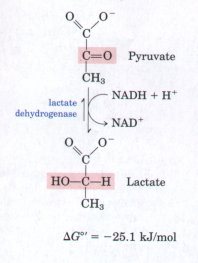
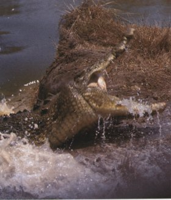
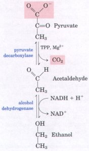
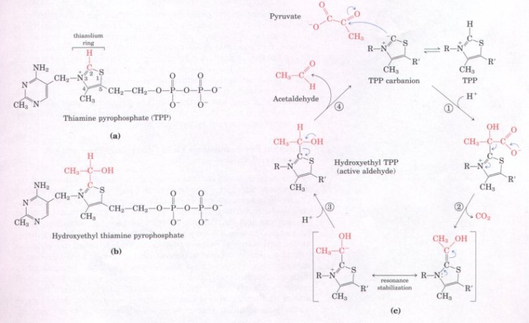
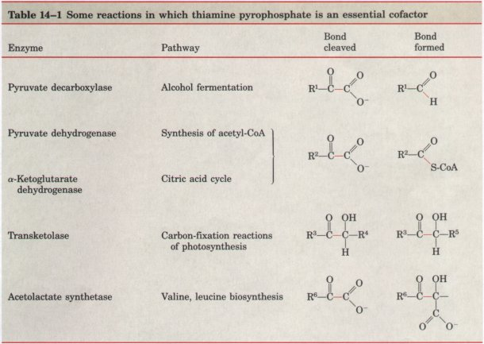

2 ethanol + 2CO2 +
2ATP + 2H2O
2 ethanol + 2CO2 +
2ATP + 2H2OPyruvate, the product of glycolysis, represents an important junction point in carbohydrate catabolism (Fig. 14-3). Under aerobic conditions pyruvate is oxidized to acetate, which enters the citric acid cycle (Chapter 15) and is oxidized to CO2 and H2O. The NADH formed by the dehydrogenation of glyceraldehyde-3-phosphate is reoxidized to NAD+ by passage of its electrons to O2 in the process of mitochondrial respiration (Chapter 18). However, under anaerobic conditions (as in very active skeletal muscles, in submerged plants, or in lactic acid bacteria, for example), NADH generated by glycolysis cannot be reoxidized by O2. Failure to regenerate NAD+ would leave the cell with no electron acceptor for the oxidation of glyceraldehyde-3-phosphate, and the energy-yielding reactions of glycolysis would stop. NAD+ must therefore be regenerated by some other reaction.
The earliest cells to arise during evolution lived in an atmosphere almost devoid of oxygen and had to develop strategies for carrying out glycolysis under anaerobic conditions. Most modern organisms have retained the ability to continually regenerate NAD+ during anaerobic glycolysis by transferring electrons from NADH to form a reduced end product such as lactate or ethanol.
Pyruvate Is the Terminal Electron Acceptor in Lactic Acid Fermentation

Although there are two oxidation-reduction steps as glucose is converted into lactate, there is no net change in the oxidation state of carbon; in glucose (C6H12O6) and lactic acid (C3H6O3), the H:C ratio is the same. Nevertheless, some of the energy of the glucose molecule has been extracted by its conversion to lactate, enough to give a net yield of two molecules of ATP for every one of glucose consumed. The lactate formed by active muscles of vertebrate animals can be recycled; it is carried in the blood to the liver where it is converted into glucose during the recovery from strenuous muscle activity (Box 14-1).
Many microorganisms ferment glucose and other hexoses to lactate. Certain lactobacilli and streptococci, for example, ferment the lactose in milk to lactic acid. The dissociation of lactic acid to lactate and H+ in the fermentation mixture lowers the pH, denaturing casein and other milk proteins and causing them to precipitate. Under the correct conditions, the resultant curdling produces cheese or yogurt, depending on which microorganism is involved.
BOX 14-1Glycolysis without Oxygen: Alligators and Coelacanths Most vertebrates are essentially aerobic organisms; they first convert glucose into pyruvate by glycolysis and then oxidize the pyruvate completely to CO2 and H2O using molecular oxygen. Anaerobic catabolism of glucose (fermentation to lactate) occurs in most vertebrates, including human beings, during short bursts of extreme muscular activity, for example in a 100 m sprint, during which oxygen cannot be carried to the muscles fast enough to oxidize pyruvate for generating ATP. Instead, the muscles use their stored glycogen as fuel to generate ATP by fermentation, with lactate as the end product. In a sprint, the lactate in the blood builds up to high concentrations. It is slowly converted back into glucose by gluconeogenesis in the liver in the subsequent rest or recovery period, during which oxygen is consumed at a gradually diminishing rate until the breathing rate returns to normal. The excess oxygen consumed in the recovery period represents the repayment of the oxygen debt. This is the amount of oxygen required to supply ATP for gluconeogenesis during recovery respiration, in order to regenerate the glycogen "borrowed" from liver and muscle to carry out intense muscular activity in the sprint. The cycle of reactions that includes glucose conversion to lactate in muscle and lactate conversion to glucose in liver is called the Cori cycle, for Carl and Gerty Cori, whose studies in the 1930s and 1940s clarified the pathway and its role.The circulatory systems of most small vertebrates can carry oxygen to their muscles fast enough to avoid having to use muscle glycogen anaerobically. For example, migrating birds often fly great distances at high speeds without rest and without incurring an oxygen debt. Many running animals of moderate size also have an essentially aerobic metabolism in their skeletal muscle. However in larger animals, including humans, the circulatory system cannot completely sustain aerobic metabolism in skeletal muscles during long bursts of muscular activity. Such animals generally are slow-moving under normal circumstances and engage in intense muscular activity only in the gravest emergencies, because such bursts of activity require long recovery periods to repay the oxygen debt. Alligators and crocodiles, for example, are normally sluggish and torpid. Yet when provoked these animals are capable of lightning-fast charges and dangerous lashings of their powerful tails. Such intense bursts of activity are short and must be followed by long periods of recovery. The fast emergency movements require lactate fermentation to generate ATP in skeletal muscles. Because the stores of muscle glycogen are not large, they are rapidly expended in intense muscular activity. Moreover, in such bursts of action, lactate reaches very high concentration in muscles and extracellular fluid. Whereas a trained athlete can recover from a 100 m sprint in 30 min or less, an alligator may require many hours of rest and extra oxygen consumption to clear the excess lactate from its blood and regenerate muscle glycogen. Other large animals, such as the elephant and rhinoceros, have similar metabolic problems, as do diving mammals such as whales and seals. Dinosaurs and other huge, now-extinct animals probably had to depend on lactate fermentation to supply energy for muscular activity, followed by very long recovery periods during which they were vulnerable to attack by smaller predators better able to use oxygen and thus better adapted to continuous, sustained muscular activity. Deep-sea explorations have revealed many species of marine life at great ocean depths, where the oxygen concentration is near zero. For example, the primitive coelacanth, a large fish recovered from depths of 4,000 m or more off the coast of South Africa, has been found to have an essentially anaerobic metabolism in virtually all its tissues. It converts carbohydrates by anaerobic mechanisms into lactate and other products, most of which must be excreted. Some marine vertebrates ferment glucose to ethanol and CO2 in order to obtain energy in the form of ATP. |
BOX 14-2BREWING BEERBeer is made by alcohol fermentation of the carbohydrates present in cereal grains (seeds) such as barley, but these carbohydrates, largely polysaccharides, are not available to the glycolytic enzymes in yeast cells until they have been degraded to disaccharides and monosaccharides. The barley must first undergo a process called malting. The cereal seeds are allowed to germinate until they form the hydrolytic enzymes required to break down the polysaccharides of their cell walls and the starch and other polysaccharide food reserves. Germination is then stopped by controlled heating, before further growth of the seedlings occurs. The product is malt, which now contains enzymes such as α-amylase and maltase, capable of breaking down starch to maltose, glucose, and other simple sugars. The malt also contains enzymes specific for the β linkages of cellulose and other cell-wall polysaccharides of the barley husks, which must be broken down in order to allow a-amylase to act on the starch within the seeds. In the next step the brewer prepares the wort, the nutrient medium required for the subsequent fermentation by yeast cells. The malt is mixed with water and then mashed or crushed. This allows the enzymes formed in the malting process to act on the cereal polysaccharides to form maltose, glucose, and other simple sugars, which are soluble in the aqueous medium. The remaining cell matter is then separated, and the liquid wort is boiled with hops, to give flavor. The wort is cooled and then aerated. Now the yeast cells are added. In the aerobic wort the yeast grows and reproduces very rapidly, using energy obtained from some of the sugars in the wort. In this phase no alcohol is formed because the yeast, being amply supplied with oxygen, oxidizes the pyruvate formed by glycolysis to CO2 and H2O via the citric acid cycle. When all the dissolved oxygen in the vat of wort has been consumed, the yeast cells switch to anaerobic metabolism of the sugar. From this point on, the yeast ferments the sugars of the wort into ethanol and CO2. The fermentation process is controlled in part by the concentration of the ethanol formed, by the pH, and by the amount of remaining sugar. After the fermentation has been stopped, the cells are removed, and the "raw" beer is ready for final processing. In the final steps of brewing, the amount of foam or head on the beer, which results from dissolved proteins, is adjusted. Normally this is controlled by the action of proteolytic enzymes that appear in the malting process. If these enzymes act on the beer proteins too long, the beer will have very little head and will be flat; if they do not act long enough, the beer will not be clear when it is cold. Sometimes proteolytic enzymes from other sources are added to control the head. |

Ethanol Is the Reduced Product in Alcohol FermentationYeast and other microorganisms ferment glucose to ethanol and CO2, rather than to lactate. Glucose is converted to pyruvate by glycolysis, and the pyruvate is converted to ethanol and CO2 in a two-step process. In the first step, pyruvate undergoes decarboxylation in the irreversible reaction catalyzed by pyruvate decarboxylase. This reaction is a simple decarboxylation and does not involve the net oxidation of pyruvate. Pyruvate decarboxylase requires Mg2+ and has a tightly bound coenzyme, thiamine pyrophosphate, discussed in more detail below.
In the second step, acetaldehyde is reduced to ethanol, with NADH derived from glyceraldehyde-3-phosphate dehydrogenation furnishing the reducing power, through the action of alcohol dehydrogenase. Ethanol and CO2, instead of lactate, are thus the end products of alcohol fermentation. The overall equation of alcohol fermentation is
Glucose + 2ADP + 2Pi 2 ethanol + 2CO2 +
2ATP + 2H2O
As in lactic acid fermentation, there is no net change in the ratio of hydrogen to carbon atoms when glucose (H : C ratio = 12/6 = 2) is fermented to two ethanol and two CO2 (combined H : C ratio = 12/6 = 2). In all fermentations, the H : C ratio of the reactants and products remains the same.
Pyruvate decarboxylase is characteristically present in brewer's and baker's yeast and in all other organisms that promote alcohol fermentation, including some plants. The CO2 produced by pyruvate decarboxylation in brewer's yeast is responsible for the characteristic carbonation of champagne. The ancient art of brewing beer involves a number of enzymatic processes in addition to the reactions of alcohol fermentation (Box 14-2). In baking, CO2 released by pyruvate decarboxylase when yeast is mixed with a fermentable sugar causes dough to rise. The enzyme is absent in the tissues of vertebrate animals and in other organisms, such as the lactic acid bacteria, that carry out lactic acid fermentation.
Alcohol dehydrogenase is present in many organisms that metabolize alcohol, including humans. In human liver it brings about the oxidation of ethanol, either ingested or produced by intestinal microorganisms, with the concomitant reduction of NAD+ to NADH.
The pyruvate decarboxylase reaction in alcohol fermentation represents our first encounter with thiamine pyrophosphate (TPP) (Fig. 14-9), a coenzyme derived from vitamin Bl. The absence of vitamin Bl in the human diet leads to the condition known as beriberi, characterized by an accumulation of body fluids (swelling), pain, paralysis, and ultimately death .

Figure 14-9 (a) Thiamine pyrophosphate (TPP), the coenzyme form of vitamin B1 (thiamin). The reactive carbon atom in the thiazolium ring is shown in red. In the reaction catalyzed by pyruvate decarboxylase, two of the three carbons of pyruvate are carried transiently on TPP in the form of hydroxyethyl thiamine pyrophosphate (b). This "active acetaldehyde" group (in red) is subsequently released as acetaldehyde. (c) The cleavage of a carbon-carbon bond often leaves behind a free electron pair or carbanion on one of the products. The strong tendency of a carbanion to form a new bond generally renders a carbanion intermediate unstable. The thiazolium ring of TPP stabilizes carbanion intermediates by providing an electrophilic (electron-deficient) structure into which the carbanion electrons can be delocalized by resonance. Structures with this property are often called "electron sinks," and they play a role in many biochemical reactions. This principle is illustrated here for the reaction catalyzed by pyruvate decarboxylase. In step 1, the TPP carbanion acts as a nucleophile, adding to the carbonyl group of pyruvate. In step 2 , a carbanion is formed following decarboxylation. The thiazolium ring acts as an electron sink, stabilizing the carbanion by resonance. After protonation (step 3), the reaction product acetaldehyde is released (step 4).

Thiamine pyrophosphate plays an important role in the cleavage of bonds adjacent to a carbonyl group (such as the decarboxylation of α-keto acids) and in chemical rearrangements involving transfer of an activated aldehyde group from one carbon atom to another (Table 14-1). The functional part of thiamine pyrophosphate is the thiazolium ring (Fig. 14-9a). The proton at C-2 of the ring is relatively acidic, and loss of this acidic proton produces a carbanion that is the active species in TPP-dependent reactions (Fig. 14-9c). This carbanion readily adds to carbonyl groups, and the thiazolium ring is thereby positioned to act as an "electron sink" that greatly facilitates reactions such as the decarboxylation catalyzed by pyruvate decarboxylase.
Microbial Fermentations Yield Other End Products of Commercial Value
Although lactate and ethanol are common products of microbial fermentations, they are by no means the only possible ones. In 1910 Chaim Weizmann (later to become the first president of Israel) discovered that a bacterium, Clostridium acetobutyricum, ferments starch to butanol and acetone. This discovery opened the field of industrial fermentations, in which some readily available material rich in carbohydrate (corn starch or molasses, for example) is supplied to a pure culture of a specific microorganism, which ferments it into a product of greater value. The methanol used to make "gasohol" is produced by microbial fermentation, as are formic, acetic, propionic, butyric, and succinic acids, glycerol, isopropanol, butanol, and butanediol. Fermentations such as these are generally carried out in huge, closed vats in which temperature and access to air are adjusted to favor the multiplication of the desired microorganism and to exclude contaminating organisms (Fig. 14-10). The beauty of industrial fermentations is that complicated, multistep chemical transformations are carried out in high yields and with few side products by chemical factories that reproduce themselves-microbial cells. In some cases it is possible to immobilize the cells in an inert support, to pass the starting material continuously through a bed of immobilized cells, and to collect the desired product in the effluent: an engineer's dream!